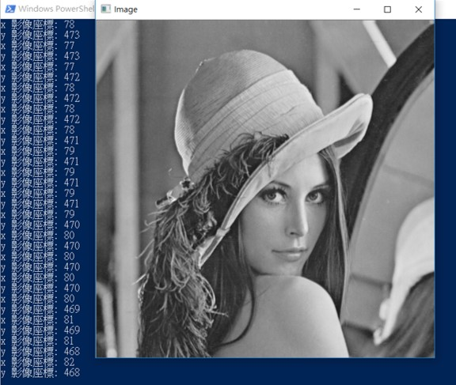

2-2偵測滑鼠的座標
程式說明:
運行結果:
將滑鼠移到影像的不同座標(x,y)，註冊的mouse callback可以將座標回傳到函數，
可以藉此做一些小畫家等等的功能。

範例程式:
#include <iostream>
#include <opencv2/opencv.hpp>
#include <opencv2/highgui/highgui.hpp>
int x = 0;
int y = 0;
static void onMouse(int _event, int _x, int _y, int _flags, void*)
{
std::cout << "x 影像座標: " << _x << std::endl;
std::cout << "y 影像座標: " << _y << std::endl;
}
int main(int argc, char** argv)
{
cv::Mat img;
img = cv::imread("lena.bmp");
cv::namedWindow("Image");
if (!img.data)
{
std::cout << "無法讀取影像" << std::endl;
return -1;
}
cv::imshow("Image", img);
cvSetMouseCallback("Image", onMouse);
cv::waitKey(0);
return 0;
}